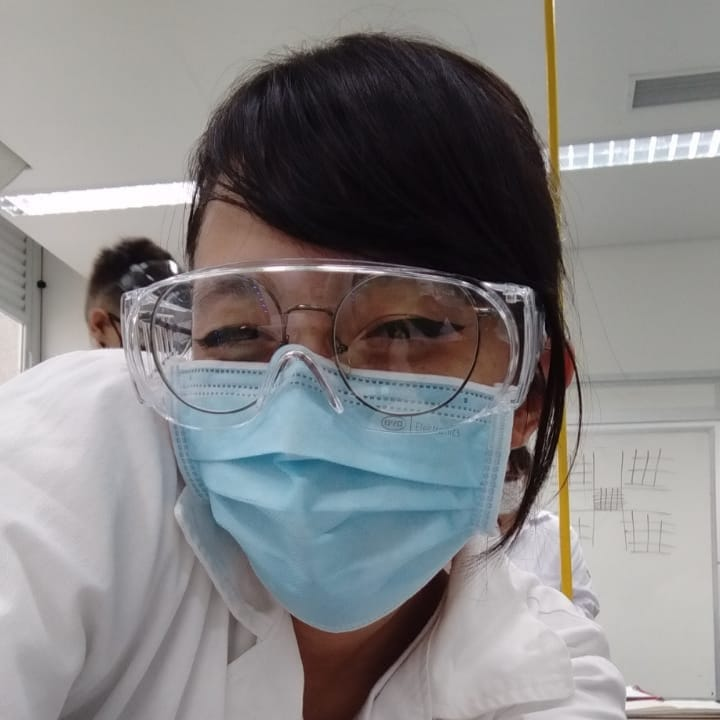

Quem somos?
Filipe de Oliveira
"Opa, meu nome é Filipe e tenho 18 anos. Escolhi esse tema porque nada me dói mais do que saber que tem pessoas com um potencial enorme quando se fala de tecnologia, porém não conseguem explorar seus dons pela falta de recursos. Espero com esse projeto poder fazer alguma diferença."Giovani Sanches
"Oi sou Giovani Sanches, gosto muito de jogar videogame, e mexer no computador, por meio da escola estudando na área de T.I me identifiquei com o tema do projeto e por isso hoje faço parte dele."Gustavo Henrique
"Meu nome é Gustavo, escolhi o projeto, pois é um problema do qual todos ou a maioria das pessoas sofre, meu intuindo neste projeto consiste em ajudar na diminuição da exclusão digital, e no aumento da acessibilidade para este público."Nataly Monique
"Meu nome é Nataly Monique, Entrar na área de TI me fez aprender mais coisas do que eu imaginei que aprenderia, e poder ajudar outras pessoas a terem esse acesso e aprenderem também foi o principal motivo pelo qual eu resolvi ingressar nesse projeto."
Thiago Martins
"Thiago Martins, desde sempre me interessei pela área de informática e ajudar as pessoas com minha futura profissão foi o que fez eu escolher e gerar a ideia de um projeto com relação a isso."Tiago Tinoco
"Meu nome é Tiago Tinoco tenho 17 anos, fazer programação é algo que está no meu sangue, desde que criança gosto de mexer no computador e usufruir de seus sistemas e o projeto trouxe um pouco disso e por isso me instigou a fazer parte"

Yumi Nakamura
"Meu nome é Yumi Braga Nakamura, entrei na área de T.I, pois vi o quão importante era ele para a tal área que quero para mim, química. Analisando com o tempo percebi que muitas propostas de emprego na área de química exigiam de mim conhecimento em informática também, ao começar o técnico em química percebi mais ainda que essas áreas estão entrelaçadas, como, por exemplo: na linguagem de programação, software e até mesmo sabe utilizar de forma correta as ferramentas do pacote Office, e com base nisso percebi o quão importante isso é para qualquer um, quando vi a oportunidade de participar deste projeto que incentiva tal ação, não pensei 2 vezes antes de fazer parte dele"Cada depoimento foi escrito pelo(a) respectivo(a) integrante.